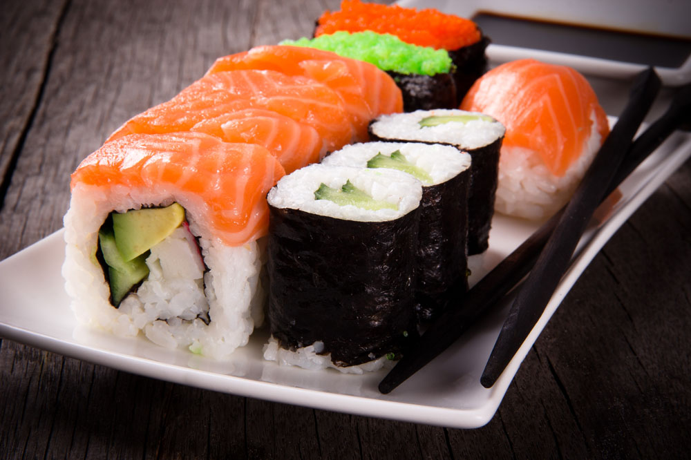

那些与美食有关的事儿 发布日期：2015-08-11 分类： 美食
我无法忘记最初做的黄闷鸡块，虽然只是件极小的事情，对我影响却不同其它。我得说那是一种开始，是它让我突然明白了饭菜并非为了裹腹那么简单，有些时候，人们对待美食的态度，其实也是对待生活的态度。
行走在现实里的文艺青年 发布日期：2015-08-11 分类： 美食
普通青年的空余时间，大部分都会交付给游戏，他们喜欢厮杀和战斗，来消磨无处释放的压力和精力，而文艺青年空闲时，会冲上一杯清爽的绿茶，抱着一本极文艺的书籍，慢慢地细细品味，整个身心都徜徉在美轮美奂的幻想里。